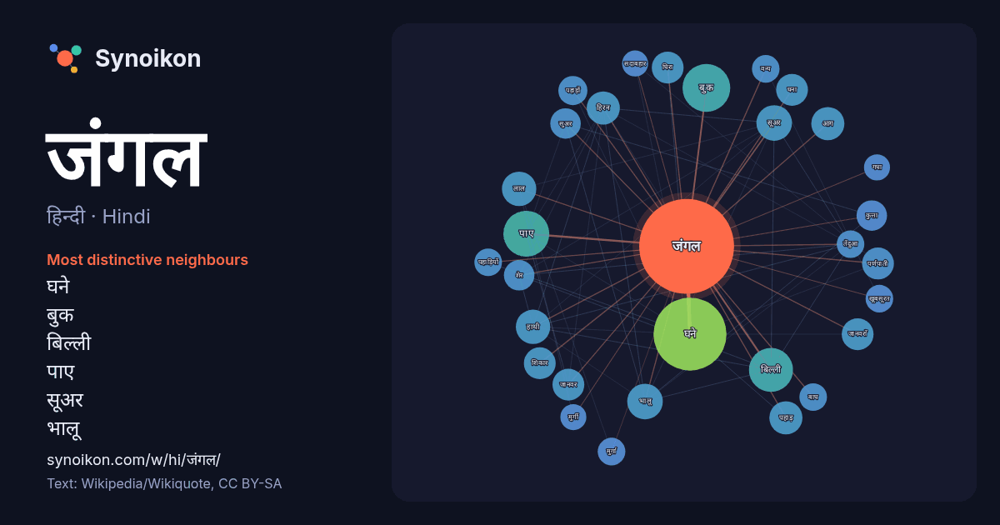

हिन्दी · Hindi · word of the day list
जंगल
“forest” · The words found around it in 870 instances from Hindi Wikipedia, Wikiquote.

Most distinctive neighbours
- घने 56×
- बुक 24×
- बिल्ली 23×
- पाए 15×
- सूअर 15×
- भालू 14×
- हिरन 14×
- पर्णपाती 13×
- हाथी 13×
- घना 13×
- पहाड़ 12×
- सुअर 12×
- कुत्ता 11×
- जानवर 11×
- घिरा 11×
- जानवरों 11×
- शेर 11×
- आग 11×
- मुर्ग़ा 9.9×
- पहाड़ों 9.9×
× = how many times more often than in general Hindi Wikipedia text.
Most frequent neighbours
- घने 63
- स्थित 31
- बुक 27
- पाए 25
- क्षेत्र 23
- बिल्ली 23
- बीच 19
- भारत 19
- भालू 15
- रहते 15
- सूअर 15
- भारतीय 14
- लाल 14
- हाथी 14
- आग 13
- जाने 13
- पहाड़ 13
- प्रदेश 13
- रहने 13
- हिरन 13
In context
- क्षेत्र जहाँ वृक्षों का घनत्व सामान्य से अधिक है उसे वन (जंगल) कहते हैं। विभिन्न मापदंडों पर आधारित जंगल की कई परिभाषाएँ हैं । वनों ने पृथ्वी के लगभग 9.5% भाग Wikipedia snippets · वन
- द जंगल बुक (अंग्रेजी:The Jungle Book; जंगल की किताब) (1894) नोबेल पुरस्कार विजेता अंग्रेजी लेखक रुडयार्ड किपलिंग की कहानियों का एक संग्रह है। इन कहानियों Wikipedia snippets · द जंगल बुक
- द जंगल बुक (हिन्दी: वन पुस्तक/ जंगल किताब) एक अमेरिकी फ़िल्म है, जिसका निर्देशन जोन फव्रेउ ने किया है। यह फ़िल्म 15 अप्रैल 2016 को सिनेमाघरों में प्रदर्शित Wikipedia snippets · द जंगल बुक (2016 फ़िल्म)
- जंगल की कहानी नरेन्द्र कोहली द्वारा रचित उपन्यास है। Wikipedia snippets · जंगल की कहानी
- एशियाई जंगली भैंसा (Bubalis bubalis arnee or Bubalus arnee) की संख्या आज 4000 से भी कम रह गई है। एक सदी पहले तक पूरे दक्षिण पूर्व एशिया में बड़ी तादाद Wikipedia snippets · जंगली भैंसा
- भारतीय जंगल कौआ (Indian jungle crow), जिसका वैज्ञानिक नाम कोर्वस कल्मिनाटस (Corvus culminatus) है, कौआ वंश की एक जीववैज्ञानिक जाति है जो भारतीय उपमहाद्वीप Wikipedia snippets · भारतीय जंगल कौआ
- पूर्वी जंगल कौआ (Eastern jungle crow), जिसका वैज्ञानिक नाम कोर्वस लेवाइलैंटी (Corvus levaillantii) है, कौआ वंश की एक जीववैज्ञानिक जाति है जो भारत, बांग्लादेश Wikipedia snippets · पूर्वी जंगल कौआ
- जंगली सूअर या जंगली वराह (Wild boar), जिसका वैज्ञानिक नाम सुस स्कोर्फा (Sus scrofa) है, सूइडाए कुल (वराहकुल) की एक जीववैज्ञानिक जाति है, जिसका मूल निवास Wikipedia snippets · जंगली सूअर
More Hindi words
- इतिहास
- ईश्वर
- कार्य
- कुत्ता
- गर्मी
- गाना
- घंटी
- घड़ी
- घोड़ा
- चाय
- चित्रकला
- छाया
- जलवायु
- जीवन
- तूफ़ान
- दर्पण
- द्वीप
- नक्षत्र
- नमक
- परिवार
- पहाड़
- पानी
- पैसा
- प्रकृति
- बगीचा
- बिल्ली
- भाषा
- भोजन
- माता
- मानचित्र
- मृत्यु
- मौन
- रेगिस्तान
- रेलगाड़ी
- रोटी
- वर्षा
- विज्ञान
- शक्ति
- शरद
- शहद
- शहर
- सड़क
- सत्य
- समय
- सर्दी
- सेतु
- स्वर्ण
- स्वास्थ्य
- हृदय
Precomputed on 2026-10-09 with default settings (±5 words, medium corpus). The interactive map can refresh it with live data.